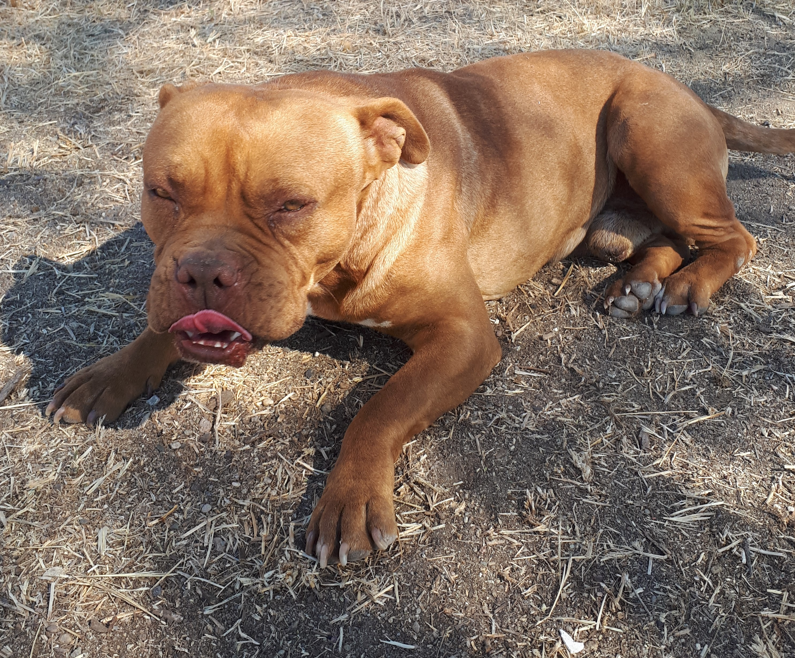

Photography
Lens flares
Etymology of Photography
"From greek photos (ϕοτοσ), light, and graphos (γραοσ), writing, delineation, or painting" 1
Dictionary definition
the art or process of producing images by the action of radiant energy and especially light on a sensitive surface (such as film or an optical sensor) 2
Personal Technique
This author take advantage of current digital and lenses technology and take hundreds of photographs, probabillity gives remarkable ones. (XD)

In memoriam of Apfel Struddel